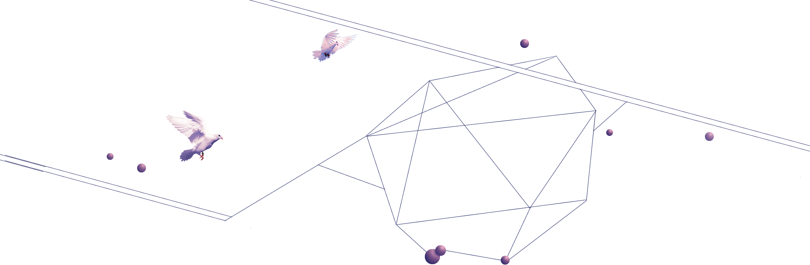
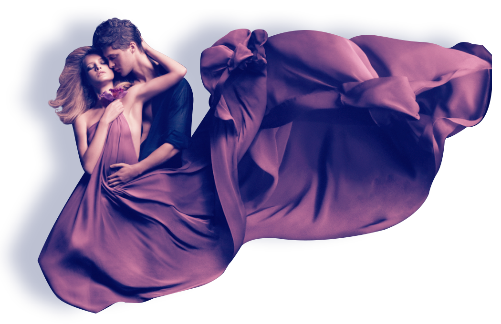

-

-

-
生命就像一篇乐章，至于音律，任凭我们怎么谱写。
许多人，把奢侈当做生活，穷尽所及，却依旧抑制不住时时刻刻苏醒的呐喊与绝望；许多人，把生命和珍惜挂在嘴上，却每天疲于奔命，最终找不回所要追寻的路；许多人，把金钱和物质视作一切，抛弃着大把时光，消耗着青春与岁月，却尘归尘，土归土，终归无法得到梦想的快乐与幸福。
.. [详情]
生命就像一篇乐章，至于音律，任凭我们怎么谱写。
许多人，把奢侈当做生活，穷尽所及，却依旧抑制不住时时刻刻苏醒的呐喊与绝望；许多人，把生命和珍惜挂在嘴上，却每天疲于奔命，最终找不回所要追寻的路；许多人，把金钱和物质视作一切，抛弃着大把时光，消耗着青春与岁月，却尘归尘，土归土，终归无法得到梦想的快乐与幸福。
.. [详情]
2014年10月23日，乌镇之夜——久盛品牌文化品鉴盛典在乌镇大剧院盛大举行，来自全国各地的室内设计师、经销商及媒体500余人共同领略久盛地板品牌魅力，畅谈国际流行趋势，并见证久盛地板微电影公映、新品牌“米兰时光”诞生。
意大利米以时尚、建筑、设计闻名,是世界四大时尚之都之一，也是设计界的天堂和圣殿。
2015年4月，久盛地板一行从浦东机场起飞奔赴米兰，在十天的时间内，体验米兰城的生活与文化，将久盛旗下“米兰时光”实木复合地板介绍给世界。当时光与米兰相遇，当时尚与历史同在，当创新与设计相逢…
意大利当地时间4月14日，2015中国当代家居跨界设计展在米兰设计周开展。久盛地板携手红星美凯龙创新设计联盟、联邦家具等八大品牌荣登米兰设计周。久盛控股集团总裁张凯受邀对话“以颠覆之心，对话设计之巅”主题论坛，意大利米兰市相关领导亲临现场，并颁发“中国设计，米兰看见”荣耀奖杯，中国家居行业在国际舞台集体发声。
意大利米以时尚、建筑、设计闻名,是世界四大时尚之都之一，也是设计界的天堂和圣殿。 2015年4月，久盛地板一行从浦东机场起飞奔赴米兰，在十天的时间内，体验米兰城的生活与文化，将久盛旗下“米兰时光”实木复合地板介绍给世界。当时光与米兰相遇，当时尚与历史同在，当创新与设计相逢…
4月14日米兰家具展及米兰设计周开展，久盛作为中国地板行业代表应邀参加，久盛控股集团总裁张凯代表集团公司向全球发布最新研发的米兰时光实木复合地板。久盛地板把中国茶文化与世界时尚相结合，并倡导在日常生活中关注人本身，注重生活品质的设计理念，受到了国内外专家和观展友人的赞赏。